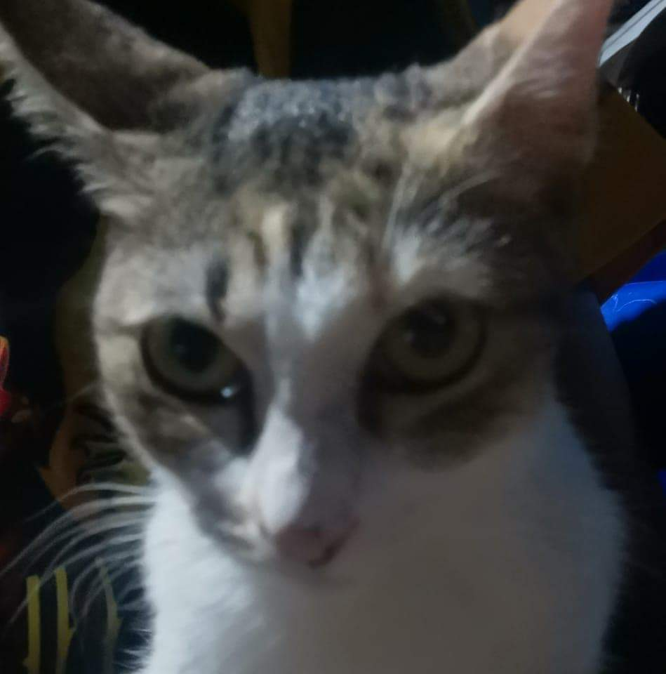

About Me
Hello, my name is Justine Philip Llanera, and I'm 19 years old. I live in Westfield Homes Iponan, Cagayan de Oro City.
I'm a second-year college student who dreams of becoming a billionaire with a large collection of cars and food.
I also enjoy eating kwek-kwek, especially when I am not the one paying for it.
I also love my girlfriend, who has been very supportive of me since day one, even though we are sometimes mortal enemies.
I am a good person, and my friends refer to me as a saint because I am too good to be a human being.
I also enjoy riding my bike to avoid stress and errands from my parents.